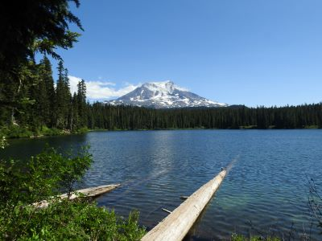
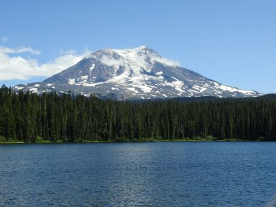
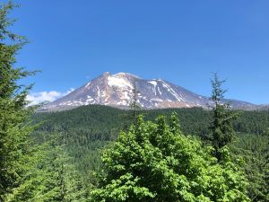
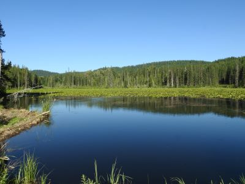
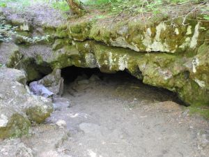

Mt Adams, WA
Mt Adams 这个周末去山里玩，看到了好美的景色。
  
最有意思的是右下图，这个湖的水是春天雪化下来的，湖下面有lava tube （火山溶岩形成的洞）冬天会充满了雪冰，冻住了，天气越来越热，下面冻住的冰雪就会化掉，这个湖的水就没了。就像洗澡的浴盆一样，塞子拔掉，水就流走了，塞子塞上，水又来了。
左下图是一个冰洞，里面还有冰，我们进去爬了一下，想像一下右下图中的湖下面的冰雪化掉的情形，心中无限感慨大自然的奇妙和上帝的伟大
 
×